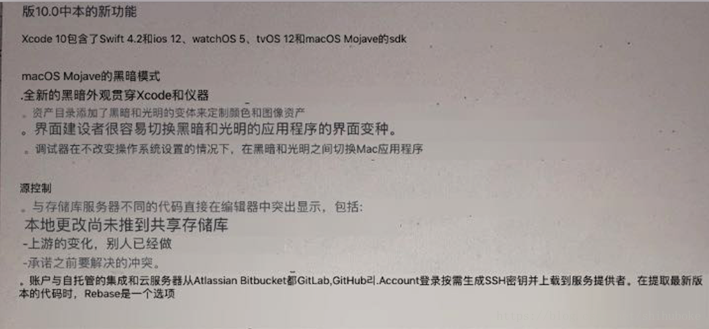
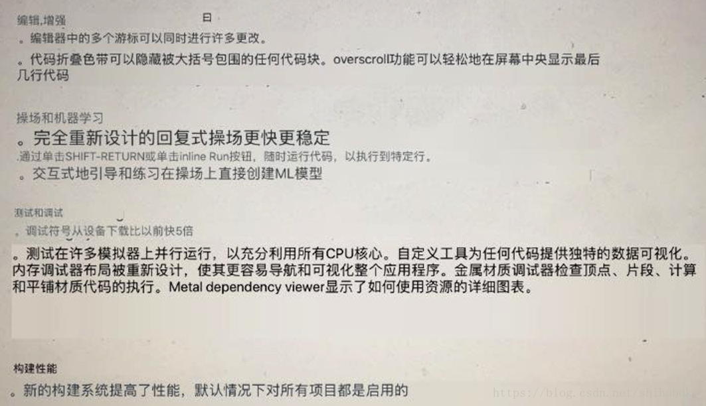
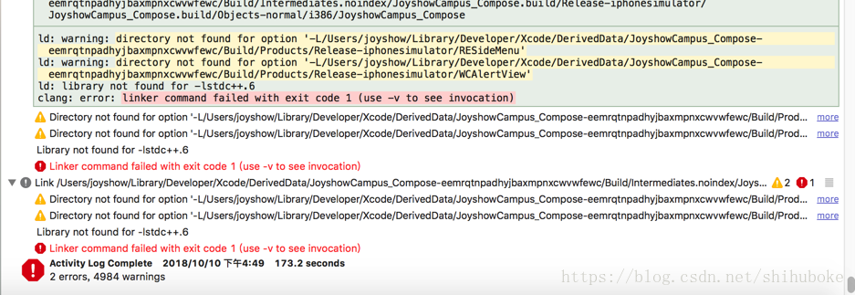
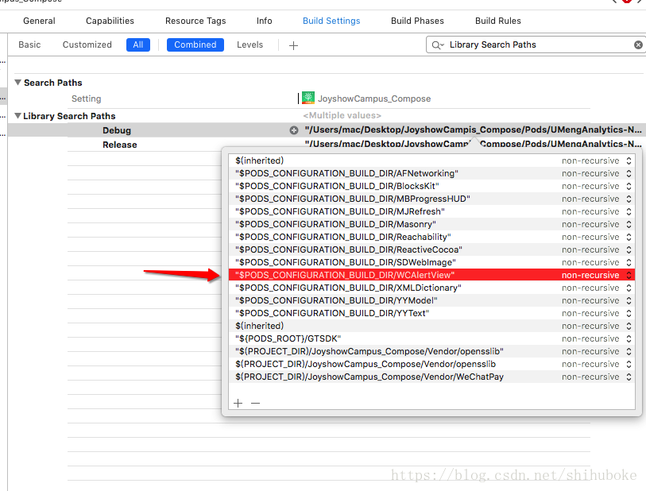
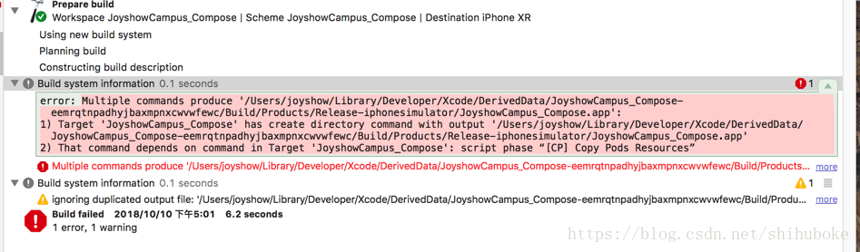
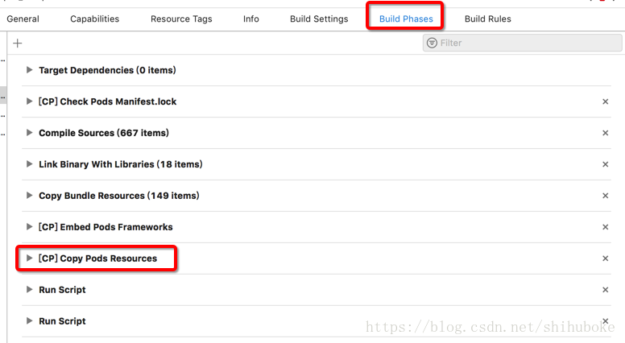
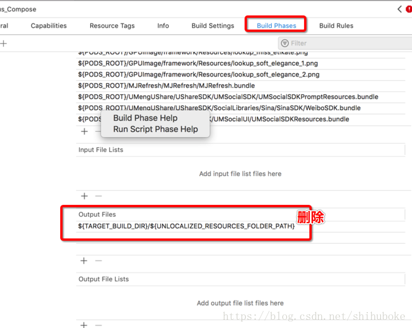
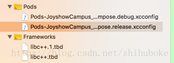
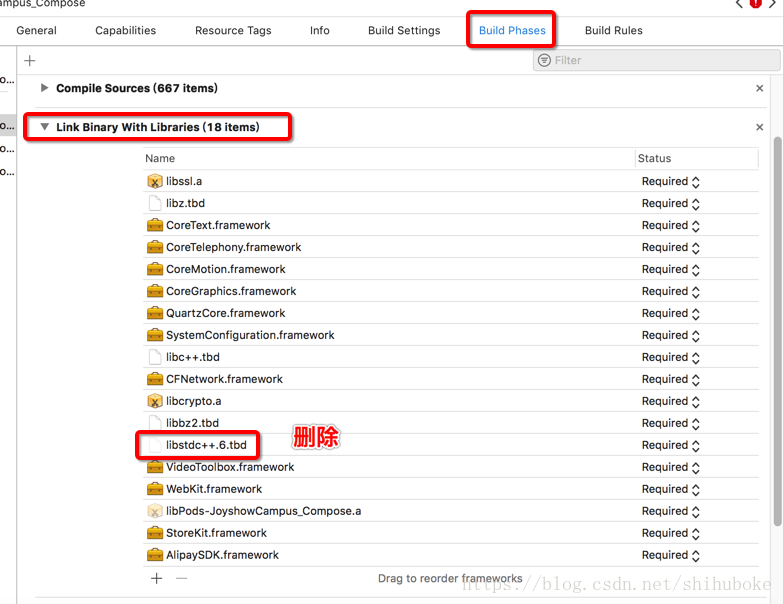
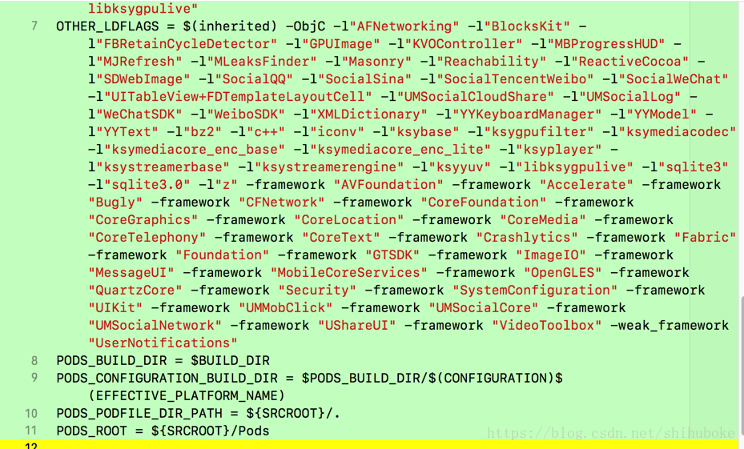

Xcode10新特性
图1:  图2: 
1.iOS “directory not found for option ‘-L/Users/…/Pods/build/Debug-iphoneos/…“解决方案
图3:编译错误 
2.解决方案:
在Target－Build Settings中找到Search Paths－Library Search Paths，删除掉在警告中所示的该路径。
图4: 
3.注意: 先 clean 、编译 在运行。
1.script phase “[CP]Copy Pods Resources” ~解决方法
图5:编译错误 
2.解决方案：
在Target－Build Phases — [CP]Copy Pods Resources — Output Files 下的 ${TARGET_BUILD_DIR}/${UNLOCALIZED_RESOURCES_FOLDER_PATH} 删除
图6:删除 
图7: 
3.注意: 先 clean 、编译 在运行。
在升级Xcode10后运行项目会发出报了一个错“library not found for -libstdc++(libstdc++.6、libstdc++6.0.9)”，很简单，就是因为xocde10后这个libstd++.6.0.9库已经废弃了。
.
1.苹果在XCode10中移除了libstdc++(libstdc++.6、libstdc++6.0.9)库。
图8: 
删除步骤：
TARGETS—>Build Phases—>Link Binary With Libraries，删除libstdc++(libstdc++.6、libstdc++6.0.9) ，添加libc++；
图9: 
2.Pods—>Targets Support Files—>Pods-XXXX.release.xcconfig ，查找libstdc++(libstdc++.6、libstdc++6.0.9)，将其删除；
图10: 